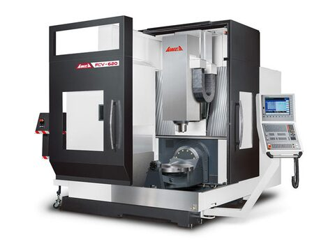
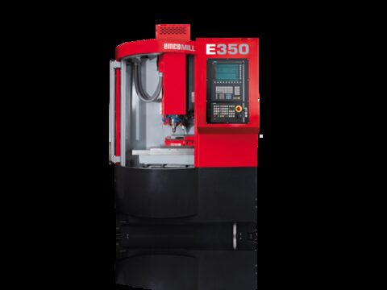
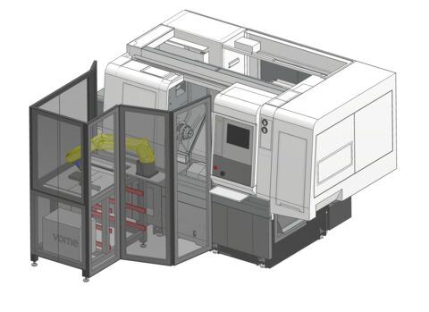
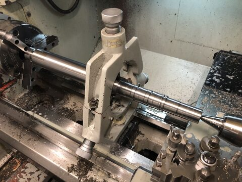
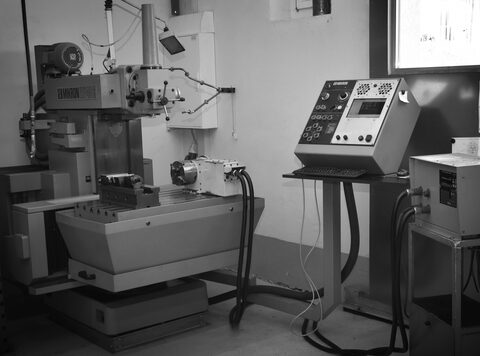
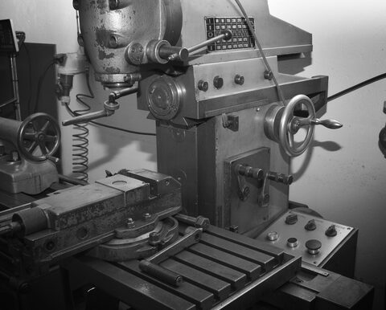
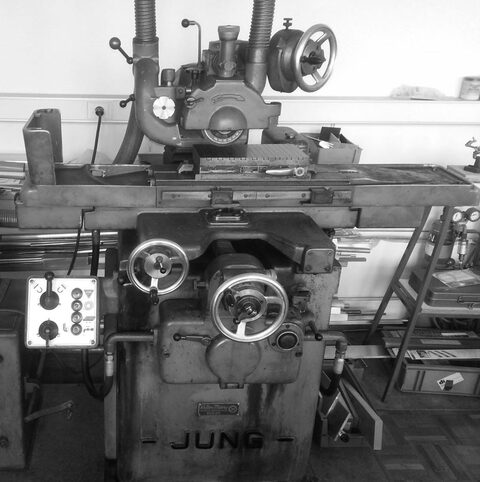
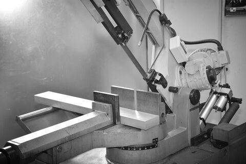
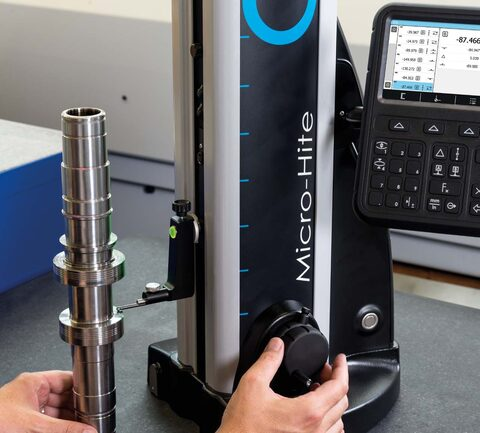

Maschinenpark
Unser Maschinenpark
CNC Fräsen und Drehen mit Roboterautomation, konventionelle Bearbeitung, Schleifen, Sägen und Messtechnik unter einem Dach.
-
Fräsen CNC 5-Achsen mit Roboterautomation
- Typ
- Awea FCV-620
- Maximale Verfahrwege (X × Y × Z)
- 635 x 535 x 460 mm
- Aufspannfläche
- Ø 500 / 650 mm
- Werkzeugwechsler
- 60-fach
- Spindel
- 15'000 rpm
- Steuerung
- Heidenhain iTNC530 mit Glasmassstäben

-
Fräsen CNC 3-Achsen mit Roboterautomation
- Typ
- Emco E350
- Maximale Verfahrwege (X × Y × Z)
- 350 x 250 x 300 mm
- Aufspannfläche
- Ø 520 / 300 mm
- Werkzeugwechsler
- 20-fach
- Spindel
- 10'000 rpm
- Steuerung
- Siemens

-
Drehen CNC mit Roboterautomation
- Typ
- Nakamura-Tome AS200LMYS
- Drehdurchmesser
- max. 340 mm
- Stangendurchlass
- 65 mm
- Spitzenweite
- 800 mm
- Drehlänge
- max. 570 mm
- Werkzeugplätze
- 12 / 24
- Steuerung
- Fanuc Oi-TF
- Spezielles
- Y-Achse, Gegenspindel und angetriebene Werkzeuge (Fräsfunktion)

-
Drehen CNC
- Typ
- XYZ Proturn 350
- Drehdurchmesser über Schlitten
- 190 mm
- Drehdurchmesser über Bett
- 350 mm
- Stangendurchlass
- 53 mm
- Spitzenweite
- 1000 mm

-
Fräsen CNC 3-Achsen
- Typ
- Mikron WF40C Retrofit
- Maximale Verfahrwege (X × Y × Z)
- 585 x 585 x 480 mm
- Aufspannfläche
- 550 x 900 mm
- Spezielles
- 4. Achse

-
Fräsen konventionell
- Maximale Verfahrwege (X × Y × Z)
- 250 x 400 x 400 mm
- Aufspannfläche
- 300 x 600 mm

-
Flachschleifen konventionell
- Arbeitsfläche mit Magnetplatte
- 300 x 150 mm
- Maximale Verfahrwege (X × Y × Z)
- X = 400 mm, Y = 160 mm
- Grösste Entfernung zwischen Tischfläche und Schleifspindel
- 400 mm
- Maximales Werkstückgewicht
- 45 kg

-
Sägen
- Rund
- 270 mm
- Viereckig
- 270 x 270 mm
- Rechteckig
- 300 x 250 mm

-
Messplatz mit Höhenmessgerät
- Typ
- 2D
- Anwendungsbereich
- 770 mm
- Fehlergrenze
- 2 + 2L/1000 µm
- Wiederholbarkeit
- ≤ 1 µm

CAD, CAM und FEM
- CAD
- Autodesk Inventor
- FEM
- Autodesk Inventor Nastran
- CAM
- Autodesk Inventor HSM